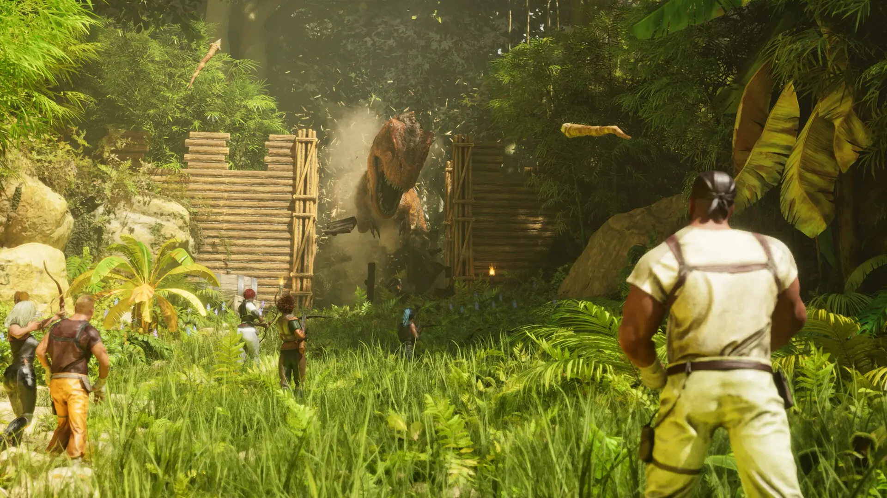
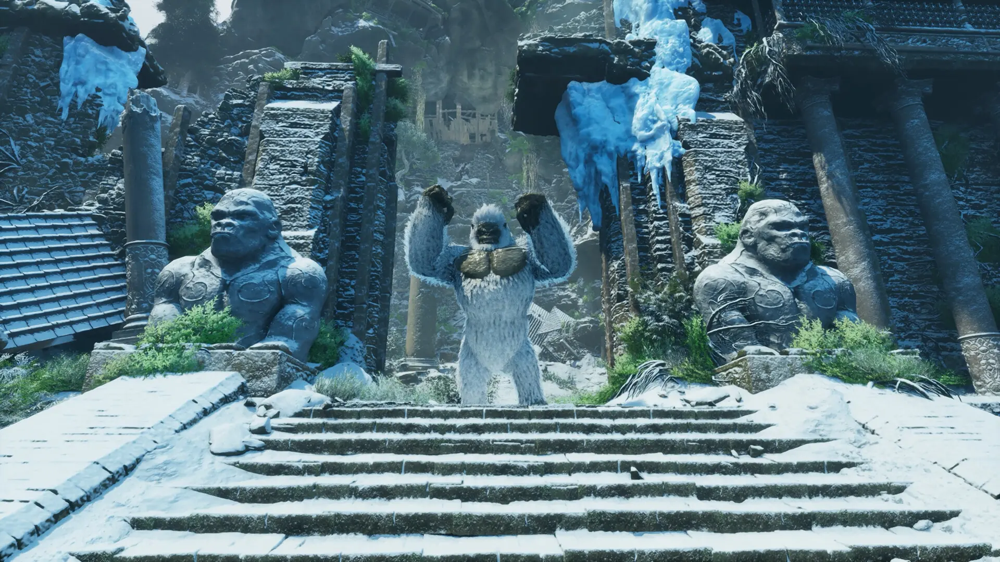
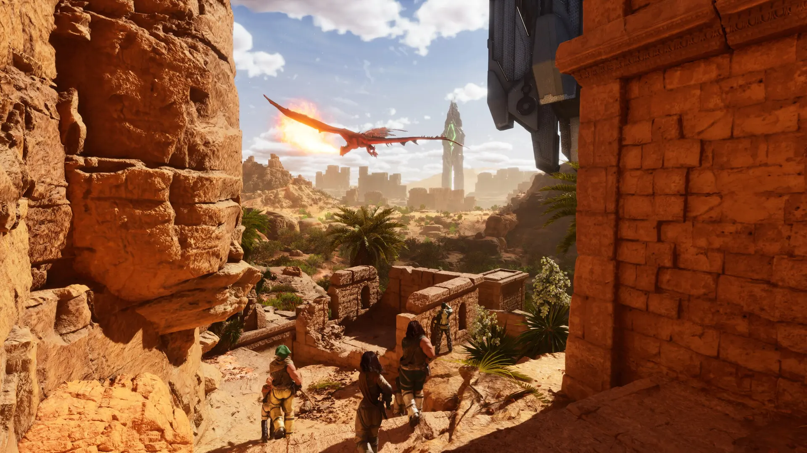
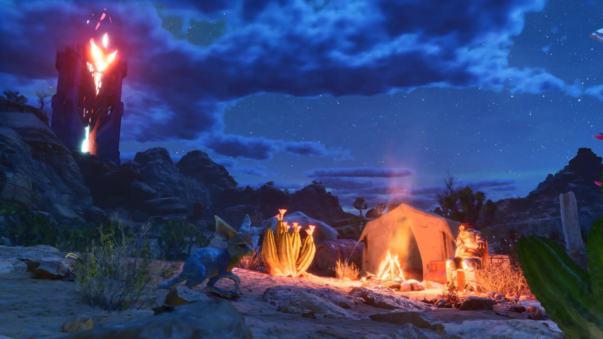
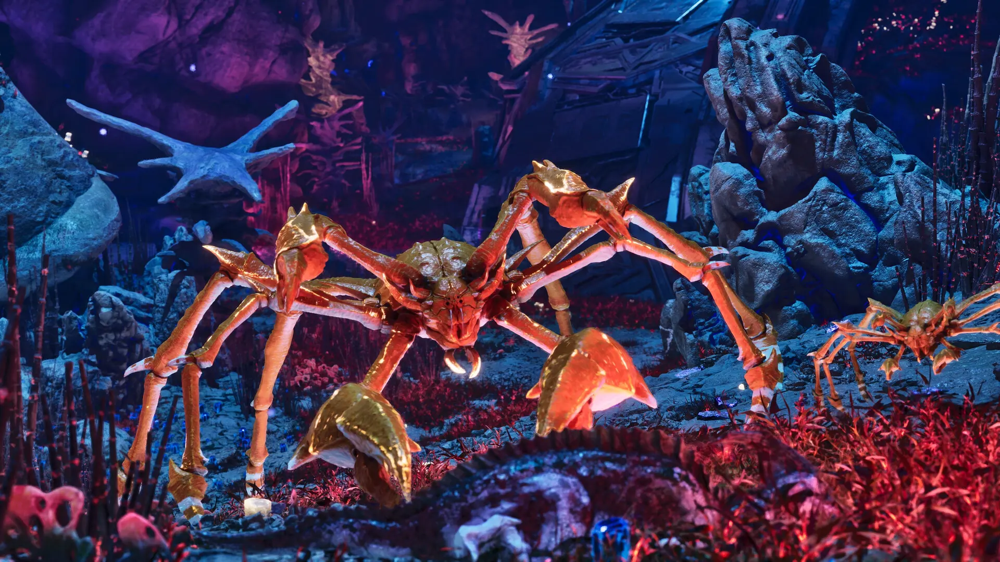
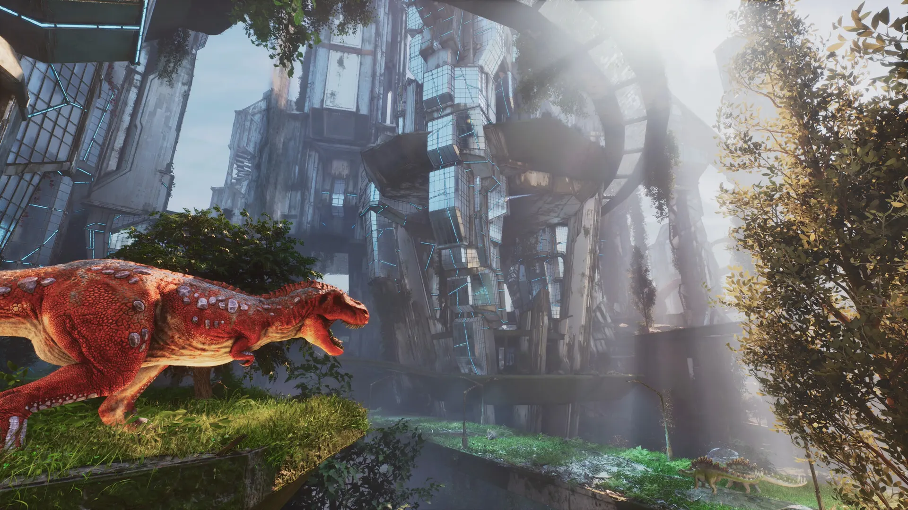

Beautiful Pictures of ASA
these pictures showcase the stunning visuals of ARK: Survival Ascended
1. A rex raiding a base

In this picture, a powerful T-Rex is seen raiding a player's base, demonstrating the intense survival challenges in ARK: Survival Ascended. The T-Rex's aggressive behavior and the player's defensive structures highlight the dynamic interactions between players and creatures in the game.
2. A megapithicus boss

In this picture, the massive megapithicus boss is shown, demonstrating the formidable challenges players face in ARK: Survival Ascended. The creature's size and strength make it a dangerous opponent, requiring strategic planning and teamwork to defeat.
3. A beautiful landscape with wyvern

This picture captures a breathtaking landscape in ARK: Survival Ascended, featuring a majestic wyvern soaring through the sky. The vibrant colors and detailed environment showcase the game's stunning visuals and immersive world, inviting players to explore and discover its many wonders.
4. A beautiful sunset over the island

This picture showcases a stunning sunset over Scorched Earth in ARK: Survival Ascended, creating a serene and picturesque scene. The warm hues of the sky and the calm atmosphere highlight the game's beautiful visual design and the peaceful moments that can be found in the world.
5. A karkinos standing on a cliff

This picture captures a majestic Karkinos standing on a cliff in ARK: Survival Ascended, showcasing the game's detailed creature designs and immersive environments. The creature's imposing presence and the dramatic landscape highlight the game's visual appeal and the unique challenges players face when encountering such powerful beings.
6. A rex roaring

This picture captures a mighty T-Rex roaring in ARK: Survival Ascended, showcasing the game's detailed creature animations. The creature's imposing presence and the dramatic landscape highlight the game's visual appeal and the unique challenges players face when encountering such powerful beings.